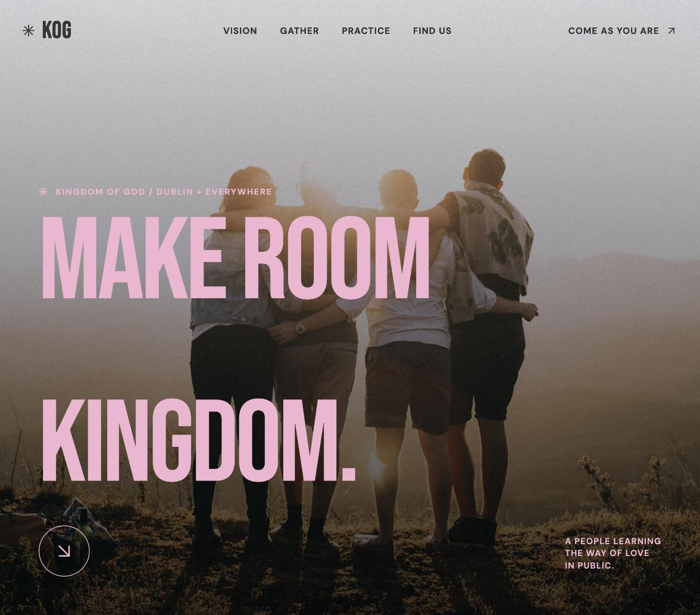
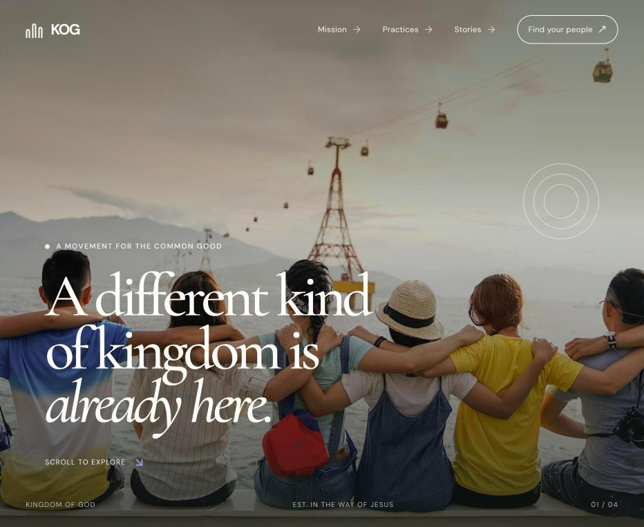
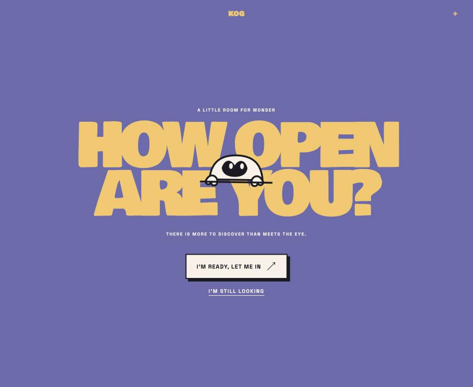
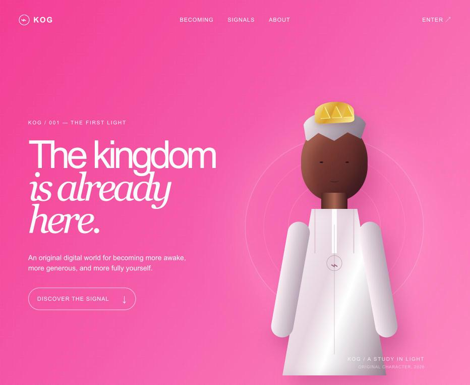
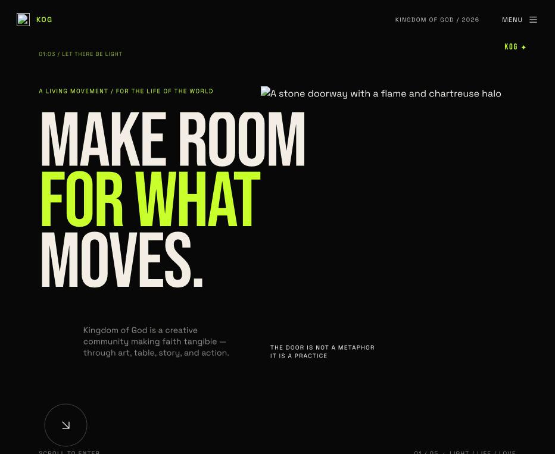
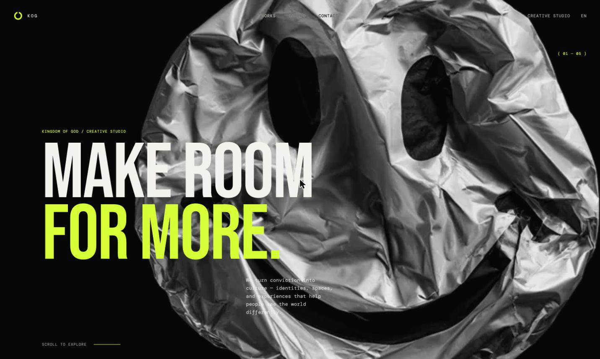

Come Gather
Hot‑Pink EditorialA full-bleed editorial scroll built on oversized condensed type, bold pink-and-black contrast, and a floating navigation rail — a communal, art-forward invitation into ordinary faith.
InspirationRecreated from a supplied screenshot of a pale-pink loading screen (a centered “85%” readout), then extended into a fashion-magazine-paced site with street-poster energy.

Faith Circle
Sacred ModernismA warm, photographic landing page — oversized serif headlines, a modular process section, and a cobalt route-line motif guiding visitors toward a next faithful step.
InspirationBenchmarked against a referenced editorial landing page's exact rhythm — photographic hero, utility nav, process section, closing CTA — reinterpreted with KOG's own content and a bone-and-cobalt palette.

Open Me
Retro Poster Age‑GateA single bold poster composition — an oversized wheat-yellow headline and a peeking mascot breaking the seam — that treats the whole viewport as one playful, comic-inspired print.
InspirationA faithful recreation of a supplied “Flying Papers” age-gate screenshot, translated through 1970s comic-book display type and screen-printed color.

Pink
Devotional PreloaderA quiet, single-color digital threshold — a raspberry field, a breathing crown mark, and a whisper-thin progress readout — before resolving into a full character-led title state.
InspirationA screenshot-faithful recreation of a hot-pink preloader reference, built out into a full experience with a ceremonial, minimal tone.

Studio One
Sacred Modernism — DarkA black editorial canvas with oversized bone-white type, a single acid-chartreuse spark, and scroll-led reveals of sculptural relic imagery — flame, stone, halo, folded fabric.
InspirationBenchmarked against a black-canvas creative-studio reference site — fixed nav, oversized type, sculptural imagery — reframed through Swiss editorial restraint meeting spiritual symbolism.

Studio Two
Surreal Devotional StudioA long-scroll studio narrative on a near-black canvas — asymmetric editorial layout, surreal tactile imagery, and a lime halo mark — framing faith as a living, expansive world.
InspirationDirectly modeled on a "Nothin'"-style reference site's sparse fixed nav, oversized compressed type, and scroll-based discovery, reinterpreted as a spiritual creative studio.